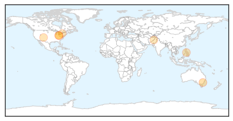

30 Day Trends
Web: 0 alerts, 0 warnings
Twitter: 0 alerts, 0 warnings
Top Articles:
- 0.982
- End of measles outbreak may be in sight
- 0.979
- New measles case confirmed in Canberra's north
- 0.927
- Measles Cases In Ohio Level Off
- 0.867
- State says measles outbreak winding down
- 0.834
- The Durango Herald 07/16/2014
- 0.800
- Govt setup mobile hospital at Bakakhel IDPs camp, 25 doctors of NWA placed under disposal of DHO
- 0.749
- Rochester Business Journal New York business news and information
- 0.606
- IDP camps: Outbreak of communicable diseases feared
Top Tweets:
-
No tweets found for Jul 18, 2014
Web/News Articles

Tweets

Article Locations
Article Confidences